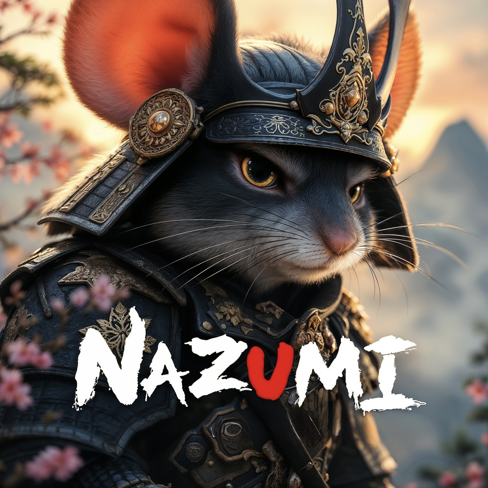
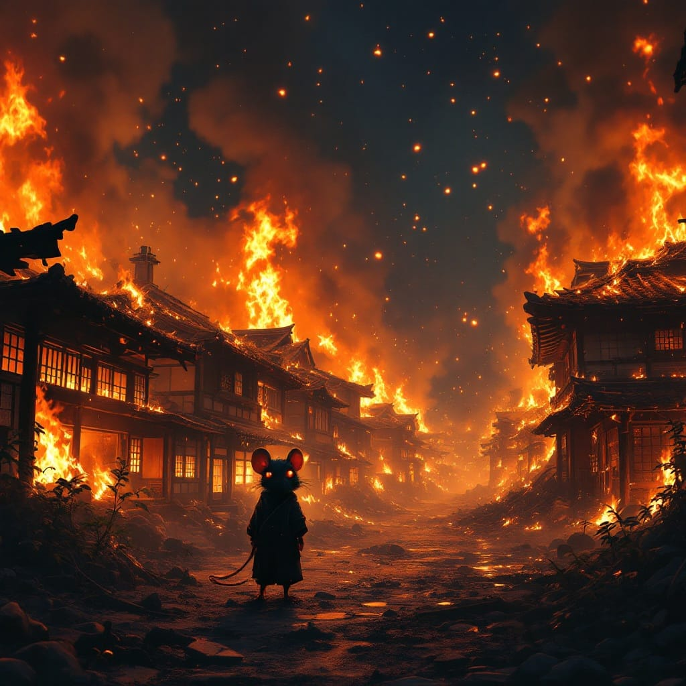
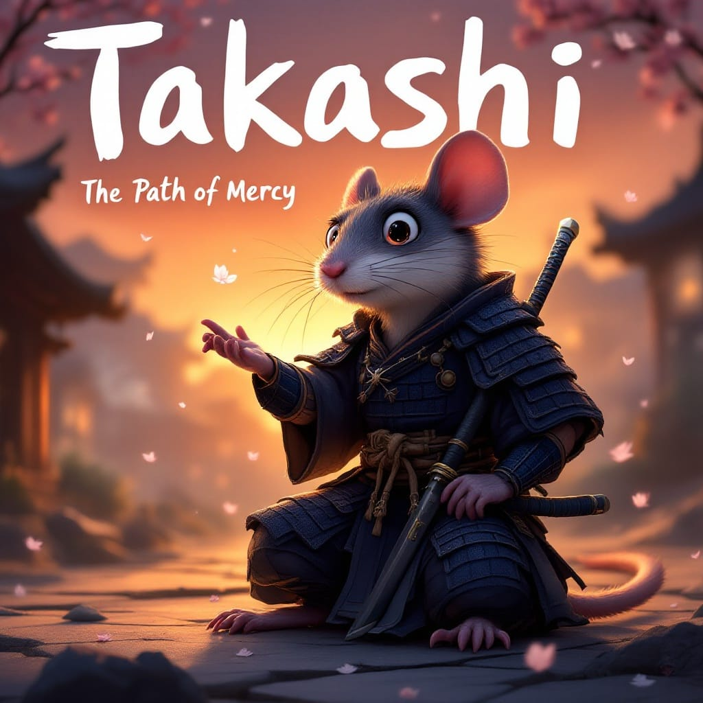
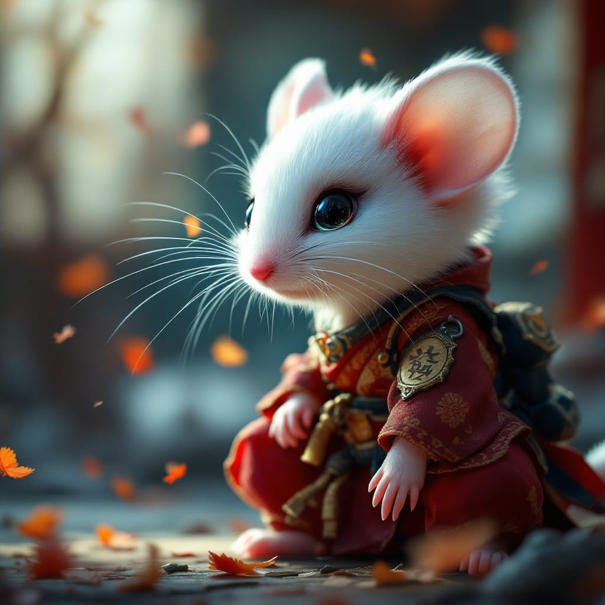
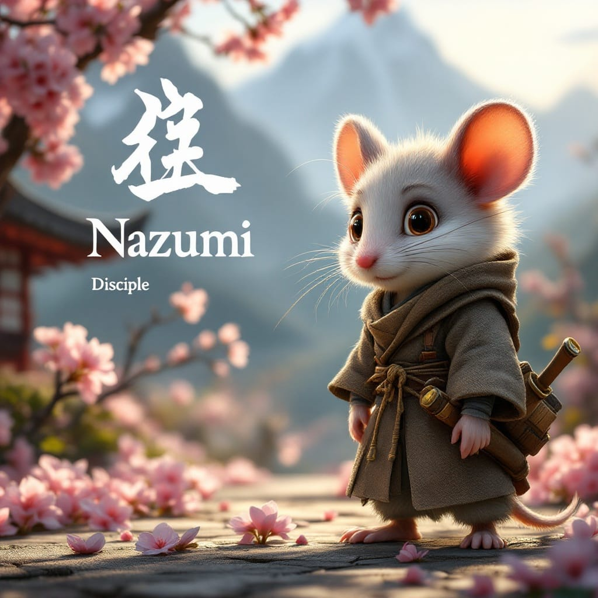
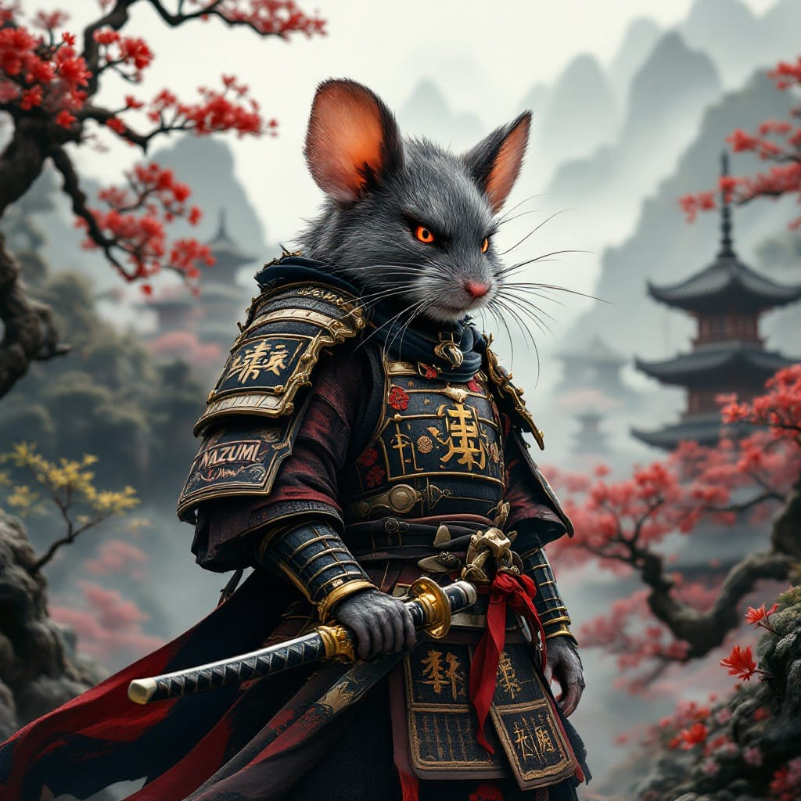
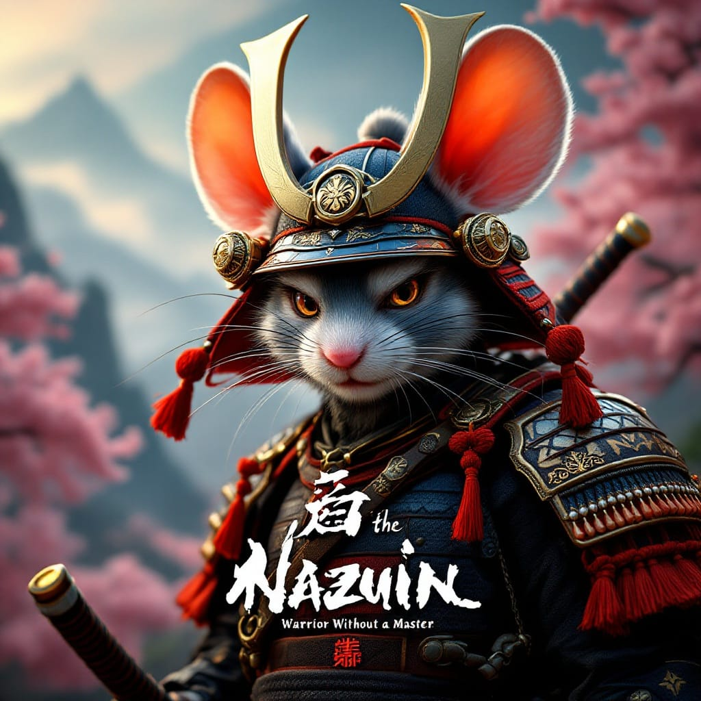
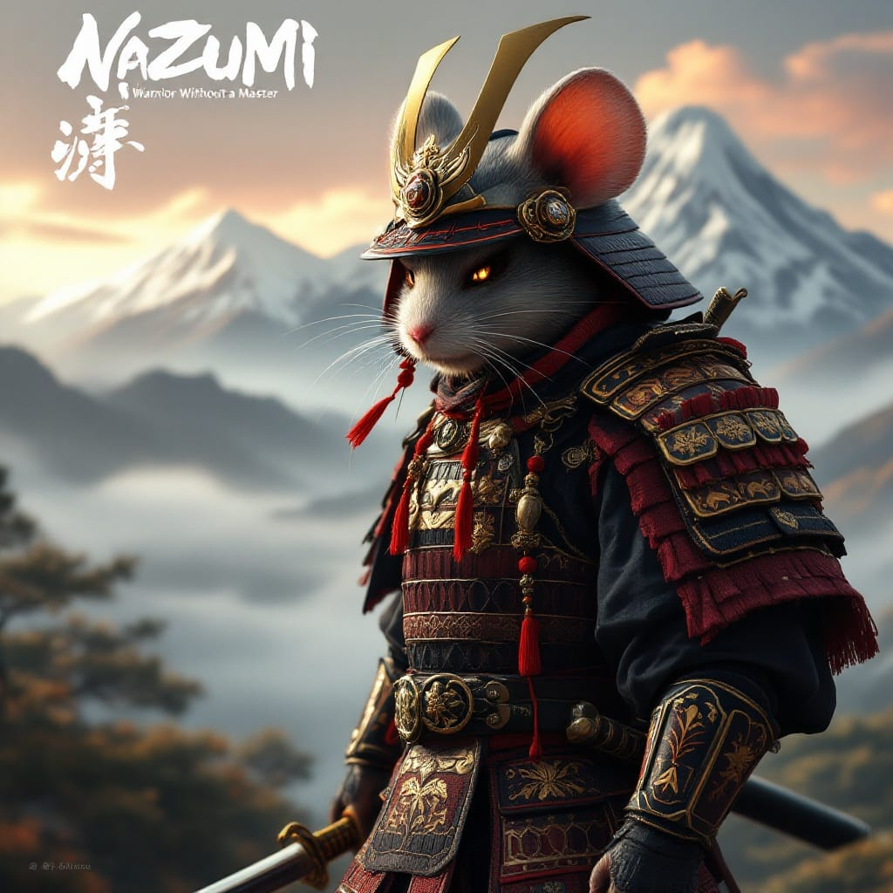

V1.2 · The Arc of the Wandering Blade
THE TRAGIC ORIGIN


I will not name what I owe you, pup. But I will not leave you here to die in our ashes.
Takashi
A sword is neither good nor evil. Like its wielder, it simply… is. The question is always the wielder.
Takashi
THE DEPARTURE
Nazumi left the burned granaries in the hands of the man whose clan had burned them. He had nowhere else to go.
THE LONG ROAD
Through Iwane and the Stone-Root villages. Past cracked millstones and sealed burrows. The world was not kind to the small.
THE UNNAMED DEBT
Takashi said nothing of Musouka. He carried his guilt in silence. Nazumi carried his grief. They walked together without naming either.
FORGING THE SWORDSMOUSE




Nazumi… I burned Musouka. I killed them. I taught you the blade that took your home from you.
Takashi — last words
THE AWAKENING

He hunted them for two years. Kage-Nezumi remnants who still prowled the granary towns. He told himself each blade drawn was justice. The towns went quiet when they heard his name — not from safety. From fear.
THE ENLIGHTENMENT
He sat in the dust of the monastery courtyard and set the needle-blade on the stone floor. He had carried it for vengeance. Then for protection. Now he set it down for something he did not yet have a word for. The monks called it peace.
I keep it for the small. But I am done carrying it for myself.
Nazumi
He had walked to the same door Takashi had walked from. The debt was paid — not in blood. In becoming.
Narrator
The small survive by standing together.
THE PATH AHEAD
Nazumi Ronin V1.2 is in development. The phases below have not launched. All items are targets, not commitments.
In Development IN DEVELOPMENT
- Version 1.2 of the site and the clan story
- Token, contract, and buy flow development
- Community channels being opened
- No launch yet
- Legal structure and compliance framework design
Genesis UPCOMING
- Token launch on SOL blockchain
- Initial liquidity pool establishment
- Community building initiatives
- Social media presence expansion
- Smart contract security audit
- Tokenomics audit and design validation
- Clan Ranks and holder-gated Scrolls
Training Arc UPCOMING
- Partnerships with aligned projects
- First major exchange listing
- Merch and Clan Council votes
Warrior's Ascension UPCOMING
- Ronin's Quest prototype and NFT collection (cosmetic only)
- Major marketing campaign
Beyond UPCOMING
- Nazumi ecosystem, app, and cross-chain work
- Charitable foundation establishment
- Partnerships with aligned projects
- Animated shorts and expanded game
- "The journey continues..."
THE PATH BEYOND
Holders unlock new chapters and side stories of the clan wars.
Earn your rank in the clan through holding and taking part.
Holders vote on story directions, art, and character names.
A story-driven game with collectible character NFTs. Cosmetic only. In design.
THE RONIN CODE
Nazumi did not find peace by walking alone. The clan is built on the same principles he nearly died refusing to learn: protect the small, hold the line, do not become what you hate.
義 — Righteousness
誠 — Sincerity
仁 — Benevolence
礼 — Respect
ACQUIRE NAZUMI RONIN
Path to Acquisition
Step 1: Acquire SOL
- Purchase SOL from a reputable exchange:
- Transfer SOL to your preferred wallet (Phantom, Solflare, or Backpack)
- Reserve a small amount of SOL for transaction fees (~0.01 SOL)
Step 2: Connect Your Wallet
- Install a compatible wallet extension
- Connect your wallet to the chosen exchange
- Verify the connection is secure
Step 3: Acquire NAZUMI
- Use one of the exchanges below to swap SOL for NAZUMI
- Set slippage to 1-2% to ensure transaction success
- Confirm the transaction in your wallet